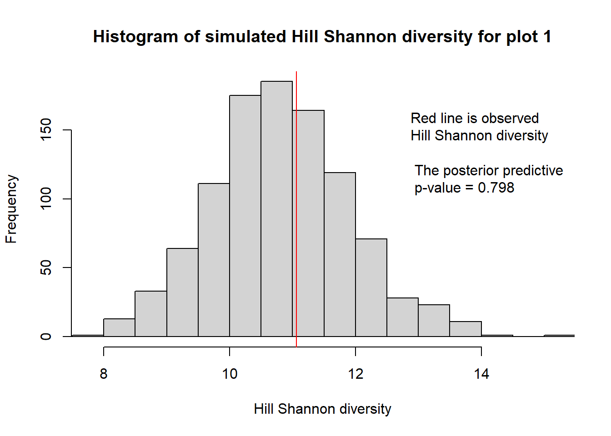
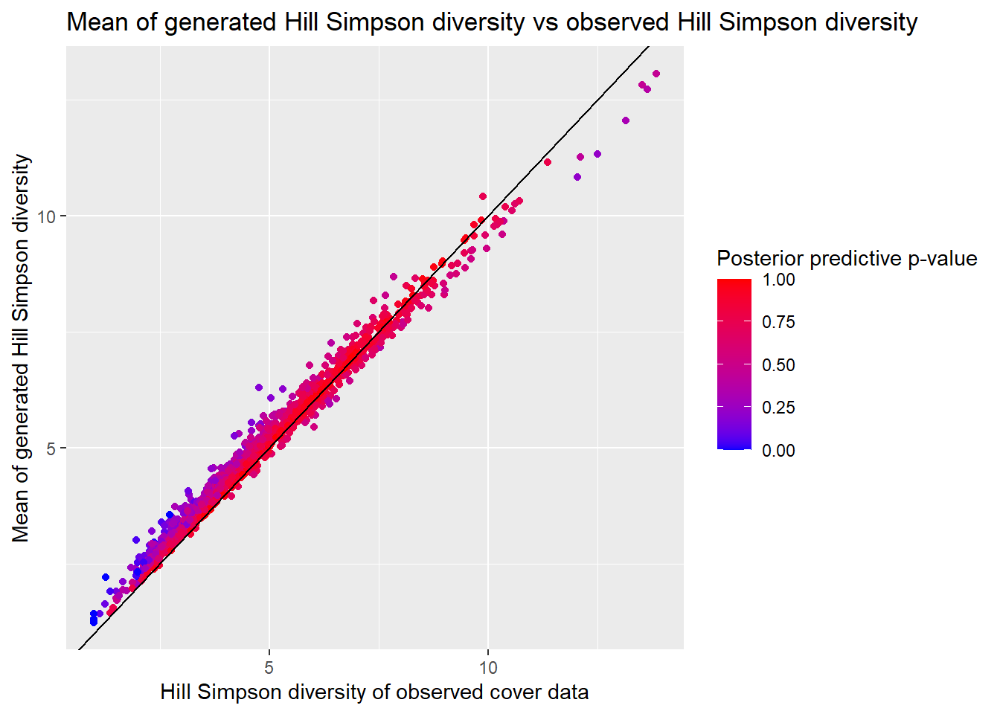
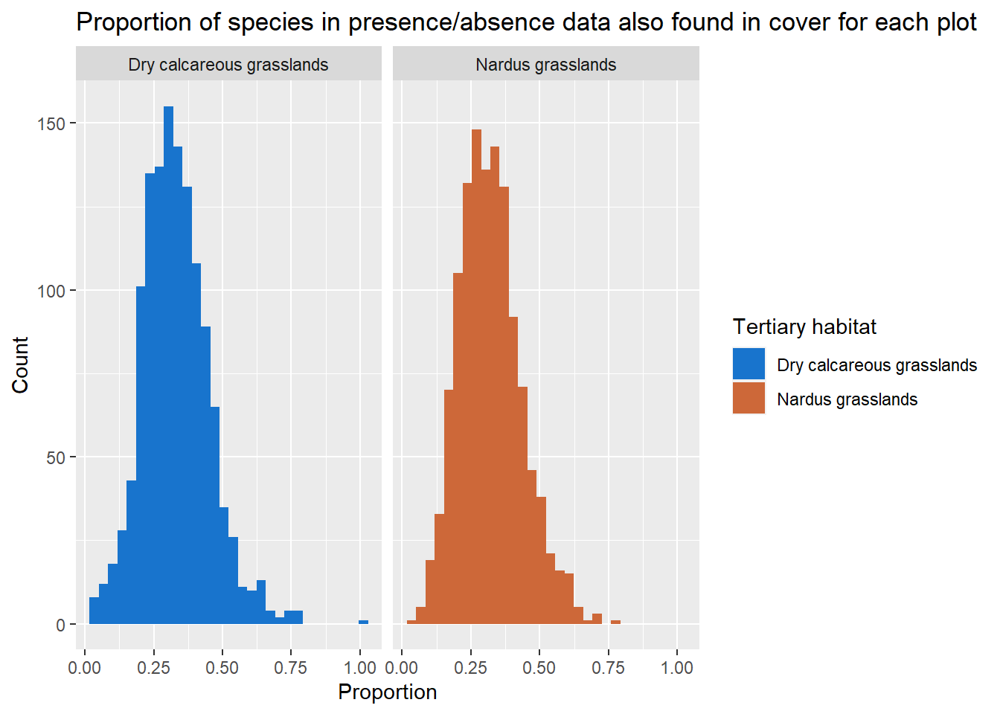
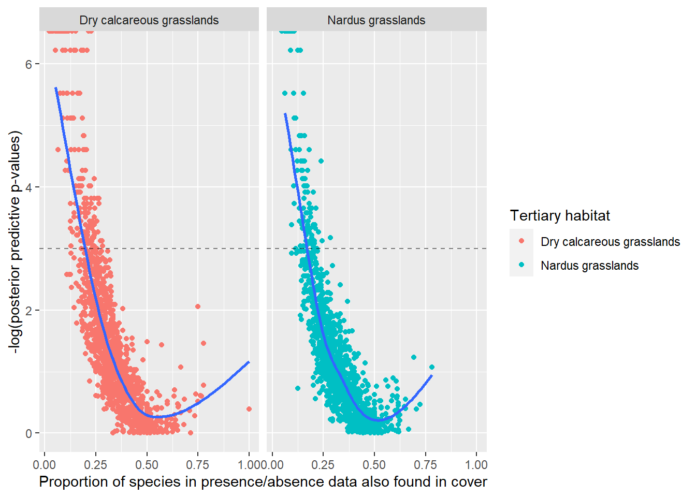

Model validation
Last updated: 2021-05-16
Checks: 6 1
Knit directory: DataProject-14-05/
This reproducible R Markdown analysis was created with workflowr (version 1.6.2). The Checks tab describes the reproducibility checks that were applied when the results were created. The Past versions tab lists the development history.
The R Markdown file has unstaged changes. To know which version of the R Markdown file created these results, you’ll want to first commit it to the Git repo. If you’re still working on the analysis, you can ignore this warning. When you’re finished, you can run wflow_publish to commit the R Markdown file and build the HTML.
Great job! The global environment was empty. Objects defined in the global environment can affect the analysis in your R Markdown file in unknown ways. For reproduciblity it’s best to always run the code in an empty environment.
The command set.seed(20210322) was run prior to running the code in the R Markdown file. Setting a seed ensures that any results that rely on randomness, e.g. subsampling or permutations, are reproducible.
Great job! Recording the operating system, R version, and package versions is critical for reproducibility.
Nice! There were no cached chunks for this analysis, so you can be confident that you successfully produced the results during this run.
Great job! Using relative paths to the files within your workflowr project makes it easier to run your code on other machines.
Great! You are using Git for version control. Tracking code development and connecting the code version to the results is critical for reproducibility.
The results in this page were generated with repository version 7b30631. See the Past versions tab to see a history of the changes made to the R Markdown and HTML files.
Note that you need to be careful to ensure that all relevant files for the analysis have been committed to Git prior to generating the results (you can use wflow_publish or wflow_git_commit). workflowr only checks the R Markdown file, but you know if there are other scripts or data files that it depends on. Below is the status of the Git repository when the results were generated:
Ignored files:
Ignored: .Rproj.user/
Untracked files:
Untracked: analysis/Introduction.Rmd
Untracked: analysis/Model.Rmd
Untracked: analysis/example.Rmd
Untracked: analysis/style.css
Unstaged changes:
Modified: analysis/Diversity.Rmd
Modified: analysis/Function_usage.Rmd
Modified: analysis/_site.yml
Modified: analysis/index.Rmd
Modified: analysis/model_validering.rmd
Modified: analysis/plot3.PNG
Note that any generated files, e.g. HTML, png, CSS, etc., are not included in this status report because it is ok for generated content to have uncommitted changes.
These are the previous versions of the repository in which changes were made to the R Markdown (analysis/model_validering.rmd) and HTML (docs/model_validering.html) files. If you’ve configured a remote Git repository (see ?wflow_git_remote), click on the hyperlinks in the table below to view the files as they were in that past version.
| File | Version | Author | Date | Message |
|---|---|---|---|---|
| Rmd | 06caa24 | GitHub | 2021-05-09 | Update model_validering.rmd |
| html | 0e9dbb6 | GitHub | 2021-05-09 | Add files via upload |
| Rmd | ca6b392 | GitHub | 2021-05-09 | Add files via upload |
| Rmd | e98e355 | GitHub | 2021-05-09 | Merge branch ‘master’ into ny—malthe |
| html | e98e355 | GitHub | 2021-05-09 | Merge branch ‘master’ into ny—malthe |
| Rmd | b9ca680 | MHPHP | 2021-05-09 | docs files |
| html | b9ca680 | MHPHP | 2021-05-09 | docs files |
| html | d483e95 | DitteM | 2021-05-09 | try |
| Rmd | b012ce1 | DitteM | 2021-05-09 | try |
| html | 2f79d87 | GitHub | 2021-05-05 | Add files via upload |
| Rmd | 8fa9526 | GitHub | 2021-05-05 | Add files via upload |
| Rmd | 17d0576 | MHPHP | 2021-04-28 | A lot of changed to model validation and added some plots to explroe where the low value p-vlaue are. |
| html | 17d0576 | MHPHP | 2021-04-28 | A lot of changed to model validation and added some plots to explroe where the low value p-vlaue are. |
| Rmd | bb6ab85 | MHPHP | 2021-04-21 | Commited index again and changes in model_validering of the assumptions |
| html | bb6ab85 | MHPHP | 2021-04-21 | Commited index again and changes in model_validering of the assumptions |
| Rmd | 8568f45 | MHPHP | 2021-04-19 | HTML of model-validatoin |
| html | 8568f45 | MHPHP | 2021-04-19 | HTML of model-validatoin |
| Rmd | ae04bc6 | MHPHP | 2021-04-19 | Changes model_validering.rmd |
| Rmd | 6c0e88a | GitHub | 2021-04-15 | Add files via upload |
| html | 1bfbb02 | GitHub | 2021-04-14 | Add files via upload |
| html | f173714 | GitHub | 2021-04-14 | Add files via upload |
Introduction
On the home page we introduced the beta binomial update method. The method combines observed cover data from the small square in the center of the plot and the presence/absence data from the entire plot. This gave rise to a new updated dataset that could be used to give diversity estimates of the entire plot. This page is intended check the goodness-of-fit of the proposed method against the observed cover data.
When we created the method we assumed that it would describe the data well. Especially, we assumed that the diversity estimates we would get by using the beta binomial update method did not differ too much from the diversity estimates we would achieve by only using the observed cover data. However, this is only an assumption and not necessarily true. We did however assume that the diversity estimates would be a bit higher using the beta binomial update method instead of using the observed data, since we add a small value for species present in the plot, but not observed in the small square of the plot, which the cover data does not. One issue could be that in plots with low diversity, the prior distributions will change the data too much so that our model will estimate the diversity way too high compared to the diversity estimate we would get from the observed cover data of the small square.
The intention of this page is to validate whether this assumption is acceptable. It will be done by using the ideas of posterior predictive checks, which are presented below and further described in [1] and [2].
Posterior predictive checks
In each plot we obtain a posterior distribution for each specie that have a \(1\) in the corresponding presence/absence data of the plot. These posterior distributions are estimated using the observed cover data and observed presence/absence data.
For a given species in a plot the posterior distribution is given by
\[ \text{Posterior} \sim Beta(a+y,b+n-y) \] where \(a\) and \(b\) are the parameters from the estimated prior distribution for the species, \(y\) is the number of hits by the species in the cover data and \(n\) is the total number of possible hits for a species in a plot. In the case of the NOVANA dataset, we have \(n = 16\).
In our method we use the mean of the posterior distribution as an estimate of the species cover in the entire plot. Instead of using the mean for the validation we draw one sample from the posterior distribution for each species we know is present in the plot and use this as the estimate of the species cover in the entire the plot. We will refer to this as generated cover data. After the sampling we apply some test statistic of interest on the generated cover data for the plot. This test statistic should capture some of the aspects on the data we interested in. In our case we want the method to be used to estimate diversity, so using some sort of diversity estimator as test statistic is natural. We do this for all plots in the dataset.
We repeat the above process a 1000 times so that we get a distribution of generated test statistics for each plot. Lastly, we compare the test statistic we would get by using the observed cover data with the distributions of generated test statistics from the generated data. Again we do this for each plot. We refer to the test statistic we get from the observed cover data as the observed test statistic.
The idea behind posterior predictive checks is as follow: If the model assumption are appropriate, the generated data will look like the observed data viewed through the chosen test statistic. Escpecially, if we make a histogram of the generated test statistics the observed test statistic should not be an outlier. If it turns out that the observed test statistic is extreme compared to the generated test statistics it would cause some concern regarding whether the model is appropriate.
The posterior predictive check can be done visually as is done for the first 3 plots in the examples below. In addition to visual inspections of the histograms we can also calculate the tail-area probability, which we call the posterior predictive p-value [3]. If we let \(T(y)\) be the observed test statistic and \(T(y^{rep})\) be the distribution of generated test statistics, then we calculate the posterior predictive p-value as
\[ \text{posterior predictive p-value} = 2\cdot \min\Big(P(T(y^{rep}) \leq T(y)),P(T(y^{rep}) \geq T(y)) \Big) \]
A small posterior predictive p-value close to zero indicates that the observed test statistic is not very likely relative to the generated test statistics and the posterior predictive check suggests that the model is misspecified with respect to the test statistic. The reason is, that when generating the test statistics and and forming the histogram, we observe a distribution for the generated test statistics. When the posterior predictive p-value is small, the observed test statistic will have a small probability of occurring in the generated distribution for the test statistics, hence will not be likely to occur and thereby is not similar to the generated test statistics.
As mentioned earlier we will use diversity estimates as test statistics. We saw on the home page that most plots in the beta binomial cover dataset had higher diversity estimates than in the observed dataset. However, that was not the case for all plots. We have defined the posterior predictive p-value as above to take into account when our method returns diversity estimate too high or too low relative to the observed dataset as we see both outcomes as extreme.
The posterior predictive checks are only intended to highlight if our model is likely given the data, i.e. the model fit the observed data well. This, however, does not mean that the model is “better” to estimate diversity than just using cover or presence/absence data. This is a further assumption we need to make based on considerations within the domain of ecology.
Model validation for 1. example
In the first example on the home page we worked with a subset of the NOVANA dataset from the tertiary habitat “Surt overdrev”. For further details on how this subset was created click link. In this subsection we will apply the ideas of posterior predictive checks to see how the beta binomial update method performs on this subset.
As test statistic we will use the Hill Simpson and Hill Shannon diversities that were also used in the example on the home page. Especially, we saw in the example on the home page how the diversity estimates obtained by the beta binomial cover dataset drifted further apart from the diversity estimates of the observed cover data when applying the the Hill Shannon diversity instead of the Hill Simpson diversity. Therefore, it is of interest to see how the properties of the two different ways to estimate diversity unfold when they are used as test statistics in our posterior predictive checks. Once again we define these as \[ \text{Hill Simpson = } \frac{1}{\Sigma_{i=1}^S(p_i)^2} \] \[ \text{Hill Shannon = } e^{ - \Sigma_{i = 1}^Sp_i\cdot \ln(p_i)} \] Further details on the diversity estimates can be found on link
We read in the datasets and remove the first 3 columns, since they do not contain information on species
#Here we load the datasets for habitat 6230 in year 2014
cover <- read.csv("data/cover_data_6230_year2014.csv")
freq <- read.csv("data/frekvens_data_6230_year2014.csv")
#We remove the first 3 columns as they are not species
cover_data <- cover[,4:ncol(cover)]
freq_data <- freq[,4:ncol(freq)]With the data we make a visual inspection of the first 3 plots where the Hill Shannon diversity is used as a test statistic. A description of the code implementation of the ppc()-function can be found in the section “Code implementation” link.
ppc(1, freq_data, cover_data)
ppc(2, freq_data, cover_data)
ppc(3, freq_data, cover_data)All posterior predictive p-values are big in the above histograms which suggests that the model is appropriate for the first three plots viewed through the Hill Shannon diversity. If we run the posterior predictive check on all plots we can get the proportion of posterior predictive p-values that are less than 0.05. We use a posterior predictive p-value of 0.05 as a threshold for when to say that the observed test statistic is not very likely given the model.
p_values_hill_shannon <- read.csv("data/hill_shannon_pval2.csv")
sum(p_values_hill_shannon < 0.05) / nrow(cover)[1] 0.07873377The interpretation is that for around 8% of the plots the posterior predictive check suggests that the beta binomial update method is not appropriate, i.e. the observed Hill Shannon diversity is an outlier compared to the Hill Shannon diversities that the model would generate.
However, it is important to check if these plots are randomly placed or lumped together for either high or low diversities. To do this we plot the mean of all the generated Hill Shannon diversities for each plot against the observed Hill Shannon diversity for the corresponding plot. We color each point in the scatter plot to visualize the posterior predictive p-value of the plot
It is worth to notice that it is specially plots with low diversity that our model seems to give diversity estimates that differ a lot from what we would get from the observed cover data. However, this does not necessarily mean that our model is bad. What it does mean is that it is more likely for these plots that the beta binomial update method overestimate the diversity for the entire plot relative to the observed cover data of the small square. Otherwise the beta binomial update method seems to generate data that is aligned with the observed cover data.
Lastly, we will create a similar plot but with the Hill Simpson diversity used as test statistic. In the example on the home page we saw that the Hill Simpson diversity was the diversity estimator that gave a diversity estimate that differed the least between the beta binomial updated cover data and the observed cover data.

Again we see that it is only for plots with low diversity where the observed Hill Simpson diversity seems unlikely given the model. However, this is only a very small proportion.
sum(p_values_hill_simpson$p_values < 0.05)/nrow(cover)[1] 0.01136364This shows that when the Hill Simpson diversity is used as test statistic the model will generate data that looks very much like the observed data. Much more than the case was when we used the Hill Shannon diversity as test statistic.
This matches with what we found in the “Hill Diversity comparison” section on the home page. There we also saw that the beta binomial update method has less importance viewed through the Hill Simpson diversity than through the Hill Shannon diversity.
For both test statistics the conclusion is that the model mostly generated data that looks like the observed data. This gives confidence in the fact that the model has captured some good aspects of the observed data and gives sensible and thereby useful result to work with. Again it should be emphasized that it does not mean the the model gives better diversity estimates then what could be obtained by only using the observed cover data.
Model validation for 2. example
We also want to include the posterior predictive checks we get when we apply these to the data from tertiary habitat “Kalkoverdrev” from year 2009 that we used in our second example on the home page. We make similar plots as we did above. First with the Hill Shannon diversity as test statistic and then with the Hill Simpson diveristy as test statistic.
Again we are interested in the proportion of plots where the observed test statistic is an outlier compared to the distribution of generated test statistics. For the Hill Shannon diversity the proportion is almost 13% if we again use a posterior predictive p-value of 0.05 as a threshold
sum(p_values$p_values < 0.05)/nrow(cover_6210)[1] 0.1278254And the proportion of plots where the observed Hill Simpson diversity is an outlier relative to the generated Hill Simpson diversities is only around 2%
sum(p_values_simpson$p_values < 0.05)/nrow(cover_6210)[1] 0.020265In the case of both test statistics we see that a larger proportion of the plots have posterior predictive p-values indicating that the observed test statistic is unlikely under the model than in “surt overdrev” (first example). As an example, in “surt overdrev” the proportion of posterior predictive p-values below 0.05 with the Hill Shannon used as test statistic was only around 8%. However, the proportion of plots is still not so big that it causes concerns regarding the whether the assumptions underlying the model are appropriate.
Below we study if there are some differences in the data from “surt overdrev” and “kalkoverdrev” that could explain why the model perform worse for the “kalkoverdrev” in these posterior predictive checks.
Comparison of tertiary habitat types
First of all, we look at some statistics to compare the plots in “kalk overdrev” (6210 in NOVANA) and the plots in “surt overdrev” (6230 in NOVANA). If we compare the two tertiary habitat types we see that the number of species in the habitat type “kalk overdrev” is generally higher than in the habitat type “surt overdrev” at plot level.
We look at the presence/absence data for the “surt overdrev” and “kalk overdrev” respectively. For each dataset we sum the number of present species in each plot and take the mean of all these. In the presence/absence data for “kalk overdrev” the mean number of species in a plot is 32.6 species while it is 26.8 species in the presence/absence data for “surt overdrev”.
We do the same with the cover data for both datasets respectively, i.e. we sum the number of species in a plot if the species is hit by at least one pin and take the mean over all plots. In the observed cover data for “kalkoverdrev” the average observed number of species in a plot is 10.5 while it is 8.3. in the observed cover data for “surt overdrev”.
What is really interesting is the the proportion of a plot where a species has a \(1\) in the presence/absence data and at least one observation in the corresponding cover data. If this proportion is low we suspect these plots to be the ones where the beta binomial update method has the biggest impact. For each plot we take the number of species found in the cover data and divide this by the number of species found in the presence/absence data for that plot. A species is found in the cover data for a plot if it is hit be at least one pin. If we again just take the average we find that the average proportion for each plot in “kalk overdrev” is 0.33 and the average proportion for each plot in “surt overdrev” is 0.32. Again there are no big differences in the statistics between the two tertiary habitat types.
However, we want to study this last statistic a bit further. To visualize the distribution of the proportions from the plots in each of the two tertiary habitat types we make the following histograms

There are no big differences between the two histograms. The most important thing to notice from this histogram is that the histogram for “kalk overdrev” has more plots with a very low proportion. In “kalkoverdrev” 1.9% of the plots have proportion below 0.1 while this is only the case for 1.2% of the plots in “surt overdrev”.
We suspect that the beta binomial update method has most impact on these plots with low proportion. To illustrate this point we plot posterior predictive p-value for each plot against the proportion of a plot where species are found in both cover data and presence/absence data. The posterior predictive p-values come from the posterior predictive checks where the Hill Shannon was used as test statistic. The y-axis is -log(posterior predictive p-value) and the dashed line is equal to -log(0.05) for comparison. Because we have taken the negative logarithm on the posterior predictive p-value the plots above the dashed line are more extreme.

The above scatterplots nicely visualize the fact that plots with a low proportion are more sensitive to the beta binomial update method. We see that when a plot has a low proportion the observed Hill Shannon diversity is far more likely to be different than the generated Hill Shannon diversities we get from the beta binomial update method. Furthermore, we notice that all plots with a posterior predictive p-value less than 0.05 have a proportion less than 0.34. This fits nicely with what we expected and is probably the reason that our method has a slightly bigger effect on “kalk overdrev” than “surt overdrev” as “kalk overdrev” has a bit more plots where the proportion of species that are found in the presence/absence data are also found in the cover data is very low.
Other validations
By using the posterior predictive checks we studied if the observed data is a likely outcome of our constructed model. It turned out to be the conclusion in most cases. However, the observed data is only a sample for each plot. This means that the “true” diversity of a plot might be rather different than the information we get from the observed cover and presence/absence data. The more correct diversity estimate could be obtained if we had cover data for the entire plot and not only the small square in the center of the plot, this will however be a huge job to collect. The beta binomial update method that we have created should in theory help to give a better diversity estimate based on the sample from the cover data in the small square and the corresponding presence/absence data of the entire plot, since we include all species present in the entire plot.
An interesting thing to do would be to simulate a dataset (both cover and present/absence) with known diversities for the plots in the dataset. When knowing the true diversity we could have tested how much better our method would be to estimate the diversity rather than only using the cover or presence/absence data. However, this validation of the method has not been possible within the scope of this project and is a topic for further studies in the future.
Code implementation
The following is an implementation of the ppc() function that was used in the make visual inspections of the posterior predictive checks for some plots.
library(fitdistrplus)#We read the cover data and the presence/absense data without the first 4 columns, as they do not cotains information on species
cover_data <- cover[,4:ncol(cover)]
freq_data <- freq[,4:ncol(freq)]
#We make a dataframa for the parameters of the prior distribution for each plot, so it is possible to save the parameteres, and not calculate them when making the posteriror for each plot. Each row will contain the number/name of the specie and its corresponding parameters for the prior
beta_fit <- data.frame(matrix(ncol = 3, nrow = 0))
# We name the columns in the
colnames(beta_fit) <- c("species","a", "b")#Here we calculate the parameters for the priror distributions of each specie:
for (specie in colnames(cover_data)) {
#First we normalise. Since there is in total used 16 pins for each plot, we will devide the entries in the cover data by 16
beta_data <- cover_data[,specie]/16
#Now we remove the plots where the specie is not present. This can be done by using the information from the presence, absense data. If it contains a 1, then the specie is present in the plot, if 0 it is absent.
beta_data <- beta_data[freq_data[[specie]] == 1]
#If the specie is not present in any of the plots, we do not have information to make a prior distribution for it, and will just give it parameters a=0 and b=0 as seen in the else clause.
if (length(unique(beta_data)) > 1) {
#We use the method of moments to fit the prior beta distribution
beta_data_fitted <- fitdist(beta_data, "beta", method = "mme")
#The parameters are added to the dataframe
beta_fit[nrow(beta_fit) + 1,] <- c(specie, beta_data_fitted$estimate[1], beta_data_fitted$estimate[2])
}
else {
beta_fit[nrow(beta_fit) + 1,] <- c(specie, 0,0)
}
}#n is the row number of the plot we are working with
n <- 1
#We define which species are in present in the plot
species_spotted_in_frekvens <- colnames(freq_data[c(freq_data[n,] == 1)])
#We define which species are present in the present/absent dataset but are not seen in the cover dataset
not_in_cover <- setdiff(species_spotted_in_frekvens,colnames(cover_data))
#We remove the species, that at present in the plots in the present/absent data, but are not observed in any plots in the cover data
species_spotted_in_frekvens <- setdiff(species_spotted_in_frekvens, not_in_cover)
# we remove the columns, that are not representing species
observed <- cover_data[n,c(species_spotted_in_frekvens)]
tmp <- observed[observed > 0]
T_static <- -sum(tmp/sum(observed) * log((tmp/sum(observed))))
#We make a dataframe to save the parameters of the posterior for each spotted specie in the plot
new_beta <- data.frame(matrix(ncol = 3, nrow = 0))
colnames(new_beta) <- c("species","a", "b")
for (species_spotted in species_spotted_in_frekvens ) {
#We define the parameters for the posterior
alpha_post <- as.numeric(beta_fit[beta_fit$species == species_spotted,]$a) + cover_data[[species_spotted]][n]
beta_post <- as.numeric(beta_fit[beta_fit$species == species_spotted,]$b) + 16 - cover_data[[species_spotted]][n]
#If the parameters are to small, we change them to 0, since R has a hard time working with them
alpha_post <- ifelse(alpha_post < 1e-10, 0, alpha_post)
beta_post <- ifelse(beta_post < 1e-10,0, beta_post)
#We add the parameters to the dataframe
new_beta[nrow(new_beta) + 1,] <- c(species_spotted, alpha_post, beta_post)}
#We make a vector, to save the shannon indexes produces in each iteration
shannon <- c()
for (i in 1:1000){
#Vector for saving the random generated values from the posterior of each specie
values <- c()
for (ele in species_spotted_in_frekvens){
#These are the parameters, for the posterior of the specie
a <- as.numeric(new_beta[new_beta$species == ele,]$a)
b <- as.numeric(new_beta[new_beta$species ==ele,]$b)
# We draw a random number from a beta distribution with the parameters for that specie and add it to the vector
values <- c(values, rbeta(1,a,b))
}
#We remove the values that are to small
tmp <- values[ values > 0.00001]
total <- sum(tmp)
#We calculate the Hill shannon diversity
shannon <- c(shannon,exp(-sum(tmp/total * log((tmp/total)))))
}
min_val <- min(T_static, min(shannon)) - 0.1
max_val <- max(T_static, max(shannon)) + 0.1
n <- length(shannon)
pvalue <- 2*min(sum(shannon>= T_static)/n, sum(shannon<= T_static)/n)
#This is the code that produces the histogram over the generated data
hist(shannon, xlim = c(min_val, max_val), main = sprintf("Histogram of simulated Hill Shannon diversities for plot %d", n), xlab = "Hill Shannon diversity")
legend("topright", legend = "Red line is observed \n Hill Shannon index")
abline(v = T_static, col = "red" )References
sessionInfo()R version 4.0.3 (2020-10-10)
Platform: x86_64-w64-mingw32/x64 (64-bit)
Running under: Windows 10 x64 (build 19042)
Matrix products: default
locale:
[1] LC_COLLATE=Danish_Denmark.1252 LC_CTYPE=Danish_Denmark.1252
[3] LC_MONETARY=Danish_Denmark.1252 LC_NUMERIC=C
[5] LC_TIME=Danish_Denmark.1252
attached base packages:
[1] stats graphics grDevices utils datasets methods base
other attached packages:
[1] fitdistrplus_1.1-3 forcats_0.5.0 stringr_1.4.0 dplyr_1.0.2
[5] purrr_0.3.4 readr_1.4.0 tidyr_1.1.2 tibble_3.0.4
[9] ggplot2_3.3.2 tidyverse_1.3.0 survival_3.2-7 MASS_7.3-53
loaded via a namespace (and not attached):
[1] Rcpp_1.0.5 lubridate_1.7.9 lattice_0.20-41 assertthat_0.2.1
[5] rprojroot_1.3-2 digest_0.6.27 R6_2.5.0 cellranger_1.1.0
[9] backports_1.1.10 reprex_0.3.0 evaluate_0.14 httr_1.4.2
[13] pillar_1.4.6 rlang_0.4.8 readxl_1.3.1 rstudioapi_0.11
[17] whisker_0.4 blob_1.2.1 Matrix_1.2-18 rmarkdown_2.5
[21] labeling_0.4.2 splines_4.0.3 munsell_0.5.0 broom_0.7.2
[25] compiler_4.0.3 httpuv_1.5.5 modelr_0.1.8 xfun_0.18
[29] pkgconfig_2.0.3 mgcv_1.8-33 htmltools_0.5.0 tidyselect_1.1.0
[33] workflowr_1.6.2 fansi_0.4.1 crayon_1.3.4 dbplyr_1.4.4
[37] withr_2.3.0 later_1.1.0.1 grid_4.0.3 nlme_3.1-149
[41] jsonlite_1.7.1 gtable_0.3.0 lifecycle_0.2.0 DBI_1.1.0
[45] git2r_0.28.0 magrittr_1.5 scales_1.1.1 cli_2.1.0
[49] stringi_1.5.3 farver_2.0.3 fs_1.5.0 promises_1.2.0.1
[53] xml2_1.3.2 ellipsis_0.3.1 generics_0.1.0 vctrs_0.3.4
[57] tools_4.0.3 glue_1.4.2 hms_0.5.3 yaml_2.2.1
[61] colorspace_1.4-1 rvest_0.3.6 knitr_1.30 haven_2.3.1